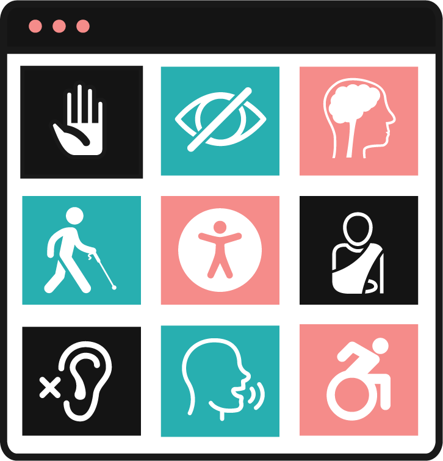
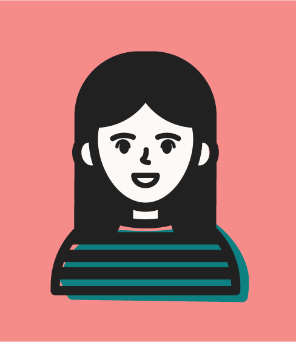

Guidance on inclusive web practices for designers.


Hi, I'm Lily!
I'm a graphic design student in my last semester of college, and I have a passion for web design. I know the
struggles of learning how to code while also wanting to
make it inclusive to everyone.
Ready to get started?
Learning web design can feel daunting, but it
doesn't have to be! This site will help you
learn the fundamentals of inclusive web design,
so you can know how to accessibiliy first.